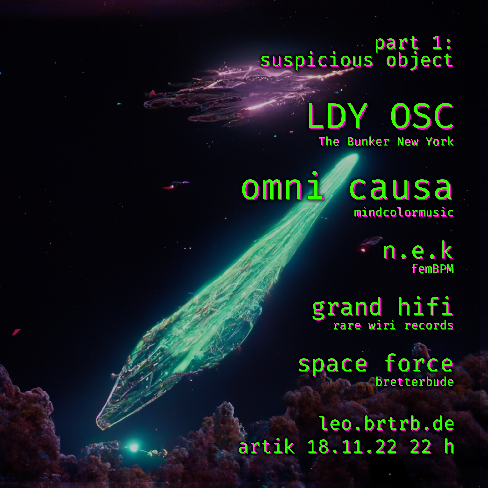
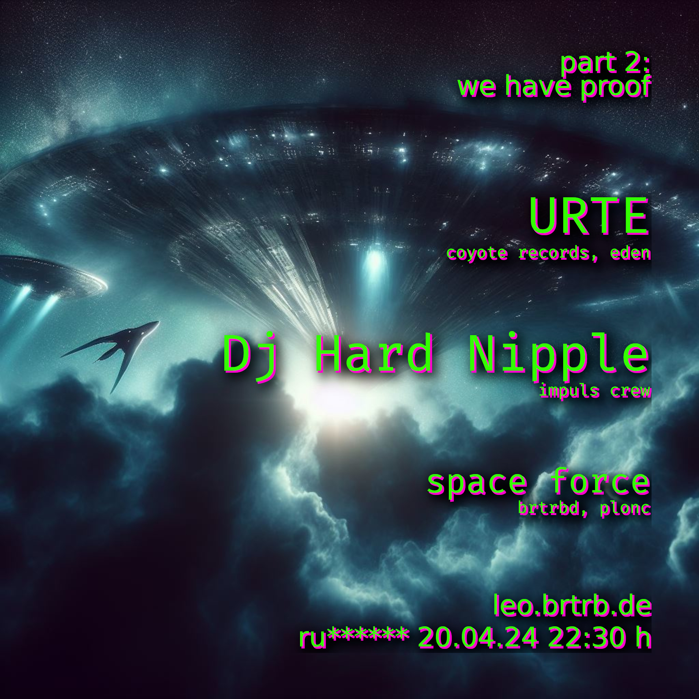

part 1 - suspicious object 18.11.22 @ Artik
"It was a usual night for Cleo. Years, seeing nothing but noise from that Xuntian thingy up there, in low earth orbit. An older, captured radio satellite, open to use by the community listening into space. A journey of randomness and nothing but noise. And some artifacts. Wait a minute, what? [...]"
w/ ldy osc, omni causa, n.e.k, and grand hifi, supported by space force (patman/plonc and lutz)
part 2 - we have proof! - 20.04.24 @ rue****o
"[...] Cleo got up and left the stale room. This can’t be true, it must be due to lack of oxygen and sleep. They couldn't remember how long they’d waited, staring into nothing, feeling somewhat scared to look at the screen again. Finally, slowly opening the door and taking a glimpse - the repetitive pattern was still there. “FOR FUCK’S SAKES I KNEW IT!” - “Come on” Remy mumbled “let me slee-” “THEY EXIST! WE HAVE PROOF!” [...]"
w/ URTE and DJ Hard Nipple, supported by space force (patman/plonc and lutz)
